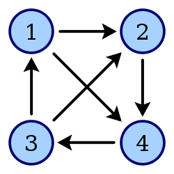

图是相较于树更复杂的一种数据结构类型，它表示了多对多的对应关系。图的结构其实就是一些顶点和一些边的集合。图又分为有向图和无向图。存储图的方法有很多，比如使用邻接矩阵，邻接表，十字链表和邻接多重表等等。下面我们一一介绍一下这些内容。
无向图其实就是说顶点与顶点之间的关系没有方向，只有说是连接的还是断开的。

相对的，有向图就是顶点与顶点之间不仅有断开还是连接的关系，还要明确到是谁指向谁。
先是顶点
class Node //顶点类
{
public:
char m_cdata; //顶点数据
bool m_bIsVisited; //判断此顶点是否被访问过，这是为了后面实现某些功能设定的
Node() {} //无参构造函数
Node(char data) //含参构造函数
{
m_cdata = data;
m_bIsVisited = false; //默认没有被访问过
}
};再是边
class Edge
{
public:
int m_iNodeIndexA; //边连接的A顶点
int m_iNodeIndexB; //边连接的B顶点
int m_iWeightValue; //边上的权值，这也是为了后面某些功能设定的
bool m_bIs_Selected;//标记这个边是否被选过
Edge(int nodeIndexA, int nodeIndexB, int weightValue) //构造函数
{
m_iNodeIndexA = nodeIndexA;
m_iNodeIndexB = nodeIndexB;
m_iWeightValue = weightValue;
m_bIs_Selected = false; //初始默认这个边没有被选择过
}
Edge(){} //无参构造函数
}; 这里只介绍一种邻接矩阵，剩下的以后再补充。顾名思义，邻接矩阵其实就是一个矩阵，用一个二维数组来定义它。我们将顶点存储在一个数组里面，假如有5个顶点，那么邻接矩阵就应该是一个5*5的二维数组。
对于无向图来说，我们用1表示连接，用0表示未连接，设数组名为Maritx,那么Matrix[1][3] = 0表示顶点数组中下标为1的顶点和下标为3的顶点没有连接关系，Matrix[1][0] = 1表示下标为1的顶点和下标为0的顶点连接在了一起。通过观察可以发现，无向图的邻接矩阵是一个上三角和下三角对称的矩阵，而其主对角线上元素全为0，比较不能自己和自己连接在一起。
而对于有向图，如果下标为1的元素指向了下标为2的元素，而下标为2的元素却没有指向下标为1的元素，那么Matrix[1][2] = 1且Matrix[2][1] = 0
定义里面有些一下数据成员是为了后面实现某些算法才加的。
class CMap
{
private:
int m_iCapacity; //图中最多可以容纳的顶点数
int m_iNodeCount; //已经添加的顶点数
Node* m_pNodeArray; //用来存放顶点数组
int* m_pMatrix; //用来存放邻接矩阵
Edge* m_pEdge; //用来存最小生成树的边
public:
CMap(int capacity)
{
m_iCapacity = capacity;
m_iNodeCount = 0;
m_pNodeArray = new Node[m_iCapacity]; //分配内存
m_pMatrix = new int[m_iCapacity * m_iCapacity];
memset(m_pMatrix, 0, m_iCapacity * m_iCapacity * sizeof(int));//将m_pMatrix所有元素初始化为0
m_pEdge = new Edge[m_iCapacity - 1]; //最小生成树边的个数就等于顶点个数减一
}
~CMap()
{
delete[]m_pNodeArray;
delete[]m_pMatrix;
delete[]m_pEdge;
}
}